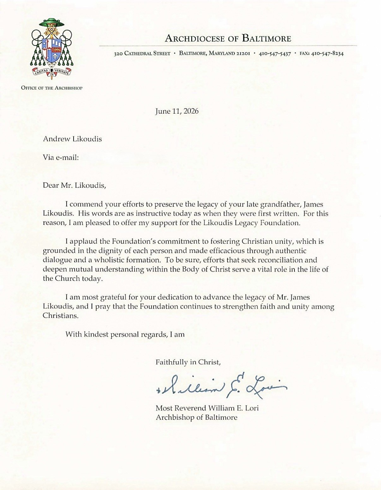

The Most Reverend William E. Lori commends the work of the Foundation
On June 11, 2026, the Most Reverend William E. Lori, Archbishop of Baltimore, wrote to offer his support for the Likoudis Legacy Foundation and its mission to preserve the legacy of James Likoudis (1928–2024) and to advance the cause of Christian unity.
“I applaud the Foundation’s commitment to fostering Christian unity … efforts that seek reconciliation and deepen mutual understanding within the Body of Christ serve a vital role in the life of the Church today.” Archbishop William E. Lori

Office of the Archbishop, Archdiocese of Baltimore · June 11, 2026 · View full size
June 11, 2026
Dear Mr. Likoudis,
I commend your efforts to preserve the legacy of your late grandfather, James Likoudis. His words are as instructive today as when they were first written. For this reason, I am pleased to offer my support for the Likoudis Legacy Foundation.
I applaud the Foundation’s commitment to fostering Christian unity, which is grounded in the dignity of each person and made efficacious through authentic dialogue and a wholistic formation. To be sure, efforts that seek reconciliation and deepen mutual understanding within the Body of Christ serve a vital role in the life of the Church today.
I am most grateful for your dedication to advance the legacy of Mr. James Likoudis, and I pray that the Foundation continues to strengthen faith and unity among Christians.
With kindest personal regards, I am
The Foundation advances ecumenical scholarship and preserves the intellectual legacy of James Likoudis. Your support sustains that mission.